Chapter 46: Ecosystems¶
Introduction¶
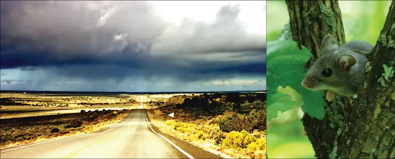
In 1993, an interesting example of ecosystem dynamics occurred when a rare lung disease struck inhabitants of the southwestern United States. This disease had an alarming rate of fatalities, killing more than half of early patients, many of whom were Native Americans. These formerly healthy young adults died from complete respiratory failure. The disease was unknown, and the Centers for Disease Control (CDC), the United States government agency responsible for managing potential epidemics, was brought in to investigate. The scientists could have learned about the disease had they known to talk with the Navajo healers who lived in the area and who had observed the connection between rainfall and mice populations, thereby predicting the 1993 outbreak.
The cause of the disease, determined within a few weeks by the CDC investigators, was the hantavirus known as Sin Nombre, the virus with “no name.” With insights from traditional Navajo medicine, scientists were able to characterize the disease rapidly and institute effective health measures to prevent its spread. This example illustrates the importance of understanding the complexities of ecosystems and how they respond to changes in the environment.
46.1 Ecology of Ecosystems¶
Learning Objectives
By the end of this section, you will be able to do the following:
- Describe the basic ecosystem types
- Explain the methods that ecologists use to study ecosystem structure and dynamics
- Identify the different methods of ecosystem modeling
- Differentiate between food chains and food webs and recognize the importance of each
Life in an ecosystem is often about competition for limited resources, a characteristic of the theory of natural selection. Competition in communities (all living things within specific habitats) is observed both within species and among different species. The resources for which organisms compete include organic material, sunlight, and mineral nutrients, which provide the energy for living processes and the matter to make up organisms’ physical structures. Other critical factors influencing community dynamics are the components of its physical and geographic environment: a habitat’s latitude, amount of rainfall, topography (elevation), and available species. These are all important environmental variables that determine which organisms can exist within a particular area.
An ecosystem is a community of living organisms and their interactions with their abiotic (nonliving) environment. Ecosystems can be small, such as the tide pools found near the rocky shores of many oceans, or large, such as the Amazon Rainforest in Brazil (Figure 46.2).
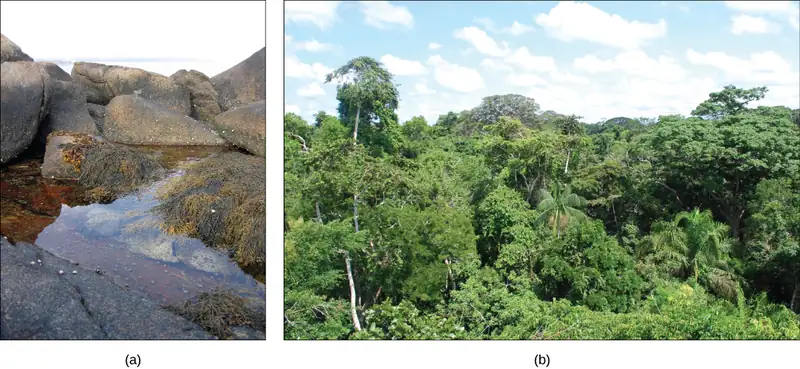
There are three broad categories of ecosystems based on their general environment: freshwater, ocean water, and terrestrial. Within these broad categories are individual ecosystem types based on the organisms present and the type of environmental habitat.
Ocean ecosystems are the most common, comprising over 70 percent of the Earth's surface and consisting of three basic types: shallow ocean, deep ocean water, and deep ocean surfaces (the low depth areas of the deep oceans). The shallow ocean ecosystems include extremely biodiverse coral reef ecosystems, and the deep ocean surface is known for its large numbers of plankton and krill (small crustaceans) that support it. These two environments are especially important to aerobic respirators worldwide as the phytoplankton perform 40 percent of all photosynthesis on Earth. Although not as diverse as the other two, deep ocean ecosystems contain a wide variety of marine organisms. Such ecosystems exist even at the bottom of the ocean where light is unable to penetrate through the water.
Freshwater ecosystems are the rarest, occurring on only 1.8 percent of the Earth's surface. Lakes, rivers, streams, and springs comprise these systems. They are quite diverse, and they support a variety of fish, amphibians, reptiles, insects, phytoplankton, fungi, and bacteria.
Terrestrial ecosystems, also known for their diversity, are grouped into large categories called biomes, such as tropical rain forests, savannas, deserts, coniferous forests, deciduous forests, and tundra. Grouping these ecosystems into just a few biome categories obscures the great diversity of the individual ecosystems within them. For example, there is great variation in desert vegetation: the saguaro cacti and other plant life in the Sonoran Desert, in the United States, are relatively abundant compared to the desolate rocky desert of Boa Vista, an island off the coast of Western Africa (Figure 46.3).
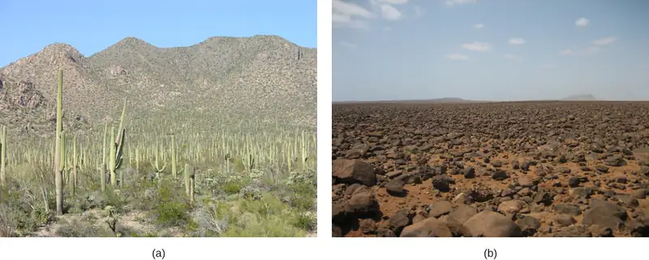
Ecosystems are complex with many interacting parts. They are routinely exposed to various disturbances, or changes in the environment that effect their compositions: yearly variations in rainfall and temperature and the slower processes of plant growth, which may take several years. Many of these disturbances result from natural processes. For example, when lightning causes a forest fire and destroys part of a forest ecosystem, the ground is eventually populated by grasses, then by bushes and shrubs, and later by mature trees, restoring the forest to its former state. The impact of environmental disturbances caused by human activities is as important as the changes wrought by natural processes. Human agricultural practices, air pollution, acid rain, global deforestation, overfishing, eutrophication, oil spills, and waste dumping on land and into the ocean are all issues of concern to conservationists.
Equilibrium is the steady state of an ecosystem where all organisms are in balance with their environment and with each other. In ecology, two parameters are used to measure changes in ecosystems: resistance and resilience. Resistance is the ability of an ecosystem to remain at equilibrium in spite of disturbances. Resilience is the speed at which an ecosystem recovers equilibrium after being disturbed. Ecosystem resistance and resilience are especially important when considering human impact. The nature of an ecosystem may change to such a degree that it can lose its resilience entirely. This process can lead to the complete destruction or irreversible altering of the ecosystem.
Food Chains and Food Webs¶
The term “food chain” is sometimes used metaphorically to describe human social situations. Individuals who are considered successful are seen as being at the top of the food chain, consuming all others for their benefit, whereas the less successful are seen as being at the bottom.
The scientific understanding of a food chain is more precise than in its everyday usage. In ecology, a food chain is a linear sequence of organisms through which nutrients and energy pass: primary producers, primary consumers, and higher-level consumers are used to describe ecosystem structure and dynamics. There is a single path through the chain. Each organism in a food chain occupies what is called a trophic level. Depending on their role as producers or consumers, species or groups of species can be assigned to various trophic levels.
In many ecosystems, the bottom of the food chain consists of photosynthetic organisms (plants and/or phytoplankton), which are called primary producers. The organisms that consume the primary producers are herbivores: the primary consumers. Secondary consumers are usually carnivores that eat the primary consumers. Tertiary consumers are carnivores that eat other carnivores. Higher-level consumers feed on the next lower trophic levels, and so on, up to the organisms at the top of the food chain: the apex consumers. In the Lake Ontario food chain shown in Figure 46.4, the Chinook salmon is the apex consumer at the top of this food chain.
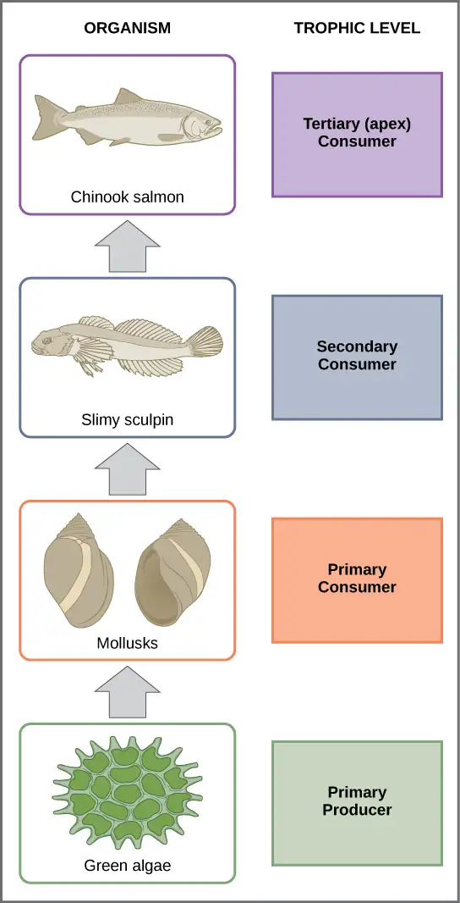
One major factor that limits the length of food chains is energy. Energy is lost as heat between each trophic level due to the second law of thermodynamics. Thus, after a limited number of trophic energy transfers, the amount of energy remaining in the food chain may not be great enough to support viable populations at yet a higher trophic level.
The loss of energy between trophic levels is illustrated by the pioneering studies of Howard T. Odum in the Silver Springs, Florida, ecosystem in the 1940s (Figure 46.5). The primary producers generated 20,819 kcal/m2/yr (kilocalories per square meter per year), the primary consumers generated 3368 kcal/m2/yr, the secondary consumers generated 383 kcal/m2/yr, and the tertiary consumers only generated 21 kcal/m2/yr. Thus, there is little energy remaining for another level of consumers in this ecosystem.
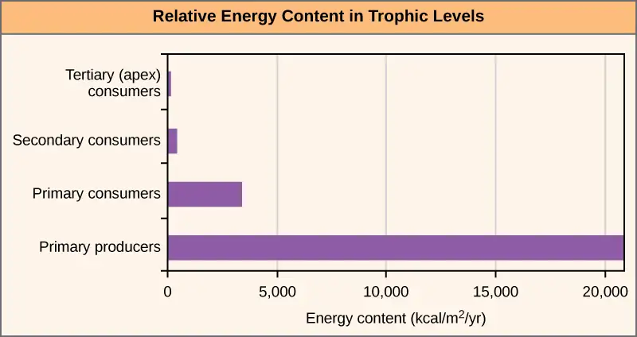
There is one problem when using food chains to accurately describe most ecosystems. Even when all organisms are grouped into appropriate trophic levels, some of these organisms can feed on species from more than one trophic level; likewise, some of these organisms can be eaten by species from multiple trophic levels. In other words, the linear model of ecosystems, the food chain, is not completely descriptive of ecosystem structure. A holistic model—which accounts for all the interactions between different species and their complex interconnected relationships with each other and with the environment—is a more accurate and descriptive model for ecosystems. A food web is a graphic representation of a holistic, nonlinear web of primary producers, primary consumers, and higher-level consumers used to describe ecosystem structure and dynamics (Figure 46.6).
![The bottom level of the illustration shows primary producers, which include diatoms, green algae, blue-green algae, and flagellates. The next level includes the primary consumers that eat primary producers. These include invertebrates such as waterfleas and mussels. Primary consumers are in turn eaten by secondary consumers, which are typically small fish and shrimp. The small fish are eaten by larger fish, the tertiary, or apex consumers. Finally, all fish are eaten by the sea lamprey. For the most part, every organism at a given level eats every organism in the level below and nothing else, but there are exceptions. For example, not all secondary consumers eat all primary consumers. Lake whitefish only eat zebra and quagga mussels, round goby eat all primary consumers, and the other secondary consumers eat every primary consumer except for the zebra and quagga mussels. The secondary consumer yellow perch eats two other secondary consumers from its own level, the slimy sculpin and the rainbow smelt, in addition to eating primary consumers from the level below. Some organisms can also skip a level. The secondary consumer opossum shrimp eats most primary consumers in the level immediately below and all of the primary producers two levels below. Sea lamprey eat all tertiary and secondary consumers. Thus, the food web is complex with interwoven layers.](img/figure-b46-01-05.webp)
A comparison of the two types of structural ecosystem models shows strength in both. Food chains are more flexible for analytical modeling, are easier to follow, and are easier to experiment with, whereas food web models more accurately represent ecosystem structure and dynamics, and data can be directly used as input for simulation modeling.
Interactive
Head to this online interactive simulator to investigate food web function. In the Interactive Labs box, under Food Web, click Step 1. Read the instructions first, and then click Step 2 for additional instructions. When you are ready to create a simulation, in the upper-right corner of the Interactive Labs box, click OPEN SIMULATOR.
Two general types of food webs are often shown interacting within a single ecosystem. A grazing food web (such as the Lake Ontario food web in Figure 46.6) has plants or other photosynthetic organisms at its base, followed by herbivores and various carnivores. A detrital food web consists of a base of organisms that feed on decaying organic matter (dead organisms), called decomposers or detritivores. These organisms are usually bacteria or fungi that recycle organic material back into the biotic part of the ecosystem as they themselves are consumed by other organisms. As all ecosystems require a method to recycle material from dead organisms, most grazing food webs have an associated detrital food web. For example, in a meadow ecosystem, plants may support a grazing food web of different organisms, primary and other levels of consumers, while at the same time supporting a detrital food web of bacteria, fungi, and detrivorous invertebrates feeding off dead plants and animals.
Evolution Connection: Three-spined Stickleback
It is well established by the theory of natural selection that changes in the environment play a major role in the evolution of species within an ecosystem. However, little is known about how the evolution of species within an ecosystem can alter the ecosystem environment. In 2009, Dr. Luke Harmon, from the University of Idaho, published a paper that for the first time showed that the evolution of organisms into subspecies can have direct effects on their ecosystem environment.1
The three-spined stickleback (Gasterosteus aculeatus) is a freshwater fish that evolved from a saltwater fish to live in freshwater lakes about 10,000 years ago, which is considered a recent development in evolutionary time (Figure 46.7). Over the last 10,000 years, these freshwater fish then became isolated from each other in different lakes. Depending on which lake population was studied, findings showed that these sticklebacks then either remained as one species or evolved into two species. The divergence of species was made possible by their use of different areas of the pond for feeding called micro niches.
Dr. Harmon and his team created artificial pond microcosms in 250-gallon tanks and added muck from freshwater ponds as a source of zooplankton and other invertebrates to sustain the fish. In different experimental tanks they introduced one species of stickleback from either a single-species or double-species lake.
Over time, the team observed that some of the tanks bloomed with algae while others did not. This puzzled the scientists, and they decided to measure the water's dissolved organic carbon (DOC), which consists of mostly large molecules of decaying organic matter that give pond-water its slightly brownish color. It turned out that the water from the tanks with two-species fish contained larger particles of DOC (and hence darker water) than water with single-species fish. This increase in DOC blocked the sunlight and prevented algal blooming. Conversely, the water from the single-species tank contained smaller DOC particles, allowing more sunlight penetration to fuel the algal blooms.
This change in the environment, which is due to the different feeding habits of the stickleback species in each lake type, probably has a great impact on the survival of other species in these ecosystems, especially other photosynthetic organisms. Thus, the study shows that, at least in these ecosystems, the environment and the evolution of populations have reciprocal effects that may now be factored into simulation models.
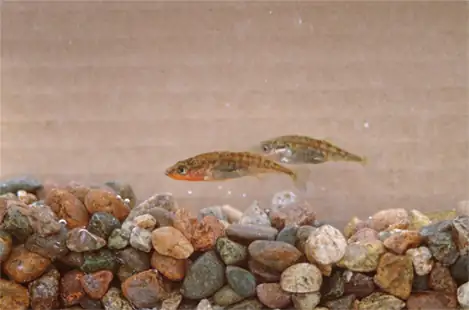
Research into Ecosystem Dynamics: Ecosystem Experimentation and Modeling¶
The study of the changes in ecosystem structure caused by changes in the environment (disturbances) or by internal forces is called ecosystem dynamics. Ecosystems are characterized using a variety of research methodologies. Some ecologists study ecosystems using controlled experimental systems, while some study entire ecosystems in their natural state, and others use both approaches.
A holistic ecosystem model attempts to quantify the composition, interaction, and dynamics of entire ecosystems; it is the most representative of the ecosystem in its natural state. A food web is an example of a holistic ecosystem model. However, this type of study is limited by time and expense, as well as the fact that it is neither feasible nor ethical to do experiments on large natural ecosystems. It is difficult to quantify all different species in an ecosystem and the dynamics in their habitat, especially when studying large habitats such as the Amazon Rainforest.
For these reasons, scientists study ecosystems under more controlled conditions. Experimental systems usually involve either partitioning a part of a natural ecosystem that can be used for experiments, termed a mesocosm, or by recreating an ecosystem entirely in an indoor or outdoor laboratory environment, which is referred to as a microcosm. A major limitation to these approaches is that removing individual organisms from their natural ecosystem or altering a natural ecosystem through partitioning may change the dynamics of the ecosystem. These changes are often due to differences in species numbers and diversity and also to environment alterations caused by partitioning (mesocosm) or recreating (microcosm) the natural habitat. Thus, these types of experiments are not totally predictive of changes that would occur in the ecosystem from which they were gathered.
As both of these approaches have their limitations, some ecologists suggest that results from these experimental systems should be used only in conjunction with holistic ecosystem studies to obtain the most representative data about ecosystem structure, function, and dynamics.
Scientists use the data generated by these experimental studies to develop ecosystem models that demonstrate the structure and dynamics of ecosystems. They use three basic types of ecosystem modeling in research and ecosystem management: a conceptual model, an analytical model, and a simulation model. A conceptual model is an ecosystem model that consists of flow charts to show interactions of different compartments of the living and nonliving components of the ecosystem. A conceptual model describes ecosystem structure and dynamics and shows how environmental disturbances affect the ecosystem; however, its ability to predict the effects of these disturbances is limited. Analytical and simulation models, in contrast, are mathematical methods of describing ecosystems that are indeed capable of predicting the effects of potential environmental changes without direct experimentation, although with some limitations as to accuracy. An analytical model is an ecosystem model that is created using simple mathematical formulas to predict the effects of environmental disturbances on ecosystem structure and dynamics. A simulation model is an ecosystem model that is created using complex computer algorithms to holistically model ecosystems and to predict the effects of environmental disturbances on ecosystem structure and dynamics. Ideally, these models are accurate enough to determine which components of the ecosystem are particularly sensitive to disturbances, and they can serve as a guide to ecosystem managers (such as conservation ecologists or fisheries biologists) in the practical maintenance of ecosystem health.
Conceptual Models¶
Conceptual models are useful for describing ecosystem structure and dynamics and for demonstrating the relationships between different organisms in a community and their environment. Conceptual models are usually depicted graphically as flow charts. The organisms and their resources are grouped into specific compartments with arrows showing the relationship and transfer of energy or nutrients between them. Thus, these diagrams are sometimes called compartment models.
To model the cycling of mineral nutrients, organic and inorganic nutrients are subdivided into those that are bioavailable (ready to be incorporated into biological macromolecules) and those that are not. For example, in a terrestrial ecosystem near a deposit of coal, carbon will be available to the plants of this ecosystem as carbon dioxide gas in a short-term period, not from the carbon-rich coal itself. However, over a longer period, microorganisms capable of digesting coal will incorporate its carbon or release it as natural gas (methane, CH4), changing this unavailable organic source into an available one. This conversion is greatly accelerated by the combustion of fossil fuels by humans, which releases large amounts of carbon dioxide into the atmosphere. This is thought to be a major factor in the rise of the atmospheric carbon dioxide levels in the industrial age. The carbon dioxide released from burning fossil fuels is produced faster than photosynthetic organisms can use it. This process is intensified by the reduction of photosynthetic trees because of worldwide deforestation. Most scientists agree that high atmospheric carbon dioxide is a major cause of global climate change.
Conceptual models are also used to show the flow of energy through particular ecosystems. Figure 46.8 is based on Howard T. Odum’s classical study of the Silver Springs, Florida, holistic ecosystem in the mid-twentieth century.2 This study shows the energy content and transfer between various ecosystem compartments.
Visual Connection
![Flow chart shows that the ecosystem absorbs 1,700,00 calories per meter squared per year of sunlight. Primary producers have a gross productivity of 20,810 calories per meter squared per year. 13,187 calories per meter squared per year is lost to respiration and heat, so the net productivity of primary producers is 7,623 calories per meter squared per year. 4,250 calories per meter squared per year is passed on to decomposers, and the remaining 3,373 calories per meter squared per year is passed on to primary consumers. Thus, the gross productivity of primary consumers is 3,373 calories per meter squared per year. 2,270 calories per meter squared per year is lost to heat and respiration, resulting in a net productivity for primary consumers of 1,103 calories per meter squared per year. 720 calories per meter squared per year is lost to decomposers, and 383 calories per meter squared per year becomes the gross productivity of secondary consumers. 272 calories per meter squared per year is lost to heat and respiration, so the net productivity for secondary consumers is 111 calories per meter squared per year. 90 calories per meter squared per year is lost to decomposers, and the remaining 21 calories per meter squared per year becomes the gross productivity of tertiary consumers. Sixteen calories per meter squared per year is lost to respiration and heat, so the net productivity of tertiary consumers is 5 calories per meter squared per year. All this energy is lost to decomposers. In total, decomposers use 5,065 calories per meter squared per year of energy, and 20,810 calories per meter squared per year is lost to respiration and heat.](img/figure-46-01-07-b018.webp)
Why do you think the value for gross productivity of the primary producers is the same as the value for total heat and respiration (20,810 kcal/m2/yr)?
Analytical and Simulation Models¶
The major limitation of conceptual models is their inability to predict the consequences of changes in ecosystem species and/or environment. Ecosystems are dynamic entities and subject to a variety of abiotic and biotic disturbances caused by natural forces and/or human activity. Ecosystems altered from their initial equilibrium state can often recover from such disturbances and return to a state of equilibrium. As most ecosystems are subject to periodic disturbances and are often in a state of change, they are usually either moving toward or away from their equilibrium state. There are many of these equilibrium states among the various components of an ecosystem, which affects the ecosystem overall. Furthermore, as humans have the ability to greatly and rapidly alter the species content and habitat of an ecosystem, the need for predictive models that enable understanding of how ecosystems respond to these changes becomes more crucial.
Analytical models often use simple, linear components of ecosystems, such as food chains, and are known to be complex mathematically; therefore, they require a significant amount of mathematical knowledge and expertise. Although analytical models have great potential, their simplification of complex ecosystems is thought to limit their accuracy. Simulation models that use computer programs are better able to deal with the complexities of ecosystem structure.
A recent development in simulation modeling uses supercomputers to create and run individual-based simulations, which accounts for the behavior of individual organisms and their effects on the ecosystem as a whole. These simulations are considered to be the most accurate and predictive of the complex responses of ecosystems to disturbances.
Interactive
Visit The Darwin Project to view a variety of ecosystem models, including simulations that model predator-prey relationships to learn more.
46.2 Energy Flow through Ecosystems¶
Learning Objectives
By the end of this section, you will be able to do the following:
- Describe how organisms acquire energy in a food web and in associated food chains
- Explain how the efficiency of energy transfers between trophic levels affects ecosystem structure and dynamics
- Discuss trophic levels and how ecological pyramids are used to model them
All living things require energy in one form or another. Energy is required by most complex metabolic pathways (often in the form of adenosine triphosphate, ATP), especially those responsible for building large molecules from smaller compounds, and life itself is an energy-driven process. Living organisms would not be able to assemble macromolecules (proteins, lipids, nucleic acids, and complex carbohydrates) from their monomeric subunits without a constant energy input.
It is important to understand how organisms acquire energy and how that energy is passed from one organism to another through food webs and their constituent food chains. Food webs illustrate how energy flows directionally through ecosystems, including how efficiently organisms acquire it, use it, and how much remains for use by other organisms of the food web.
How Organisms Acquire Energy in a Food Web¶
Energy is acquired by living things in three ways: photosynthesis, chemosynthesis, and the consumption and digestion of other living or previously living organisms by heterotrophs.
Photosynthetic and chemosynthetic organisms are both grouped into a category known as autotrophs: organisms capable of synthesizing their own food (more specifically, capable of using inorganic carbon as a carbon source). Photosynthetic autotrophs (photoautotrophs) use sunlight as an energy source, whereas chemosynthetic autotrophs (chemoautotrophs) use inorganic molecules as an energy source. Autotrophs are critical for all ecosystems. Without these organisms, energy would not be available to other living organisms and life itself would not be possible.
Photoautotrophs, such as plants, algae, and photosynthetic bacteria, serve as the energy source for a majority of the world’s ecosystems. These ecosystems are often described by grazing food webs. Photoautotrophs harness the solar energy of the sun by converting it to chemical energy in the form of ATP (and NADP). The energy stored in ATP is used to synthesize complex organic molecules, such as glucose.
Chemoautotrophs are primarily bacteria that are found in rare ecosystems where sunlight is not available, such as in those associated with dark caves or hydrothermal vents at the bottom of the ocean (Figure 46.9). Many chemoautotrophs in hydrothermal vents use hydrogen sulfide (H2S), which is released from the vents as a source of chemical energy. This allows chemoautotrophs to synthesize complex organic molecules, such as glucose, for their own energy and in turn supplies energy to the rest of the ecosystem.
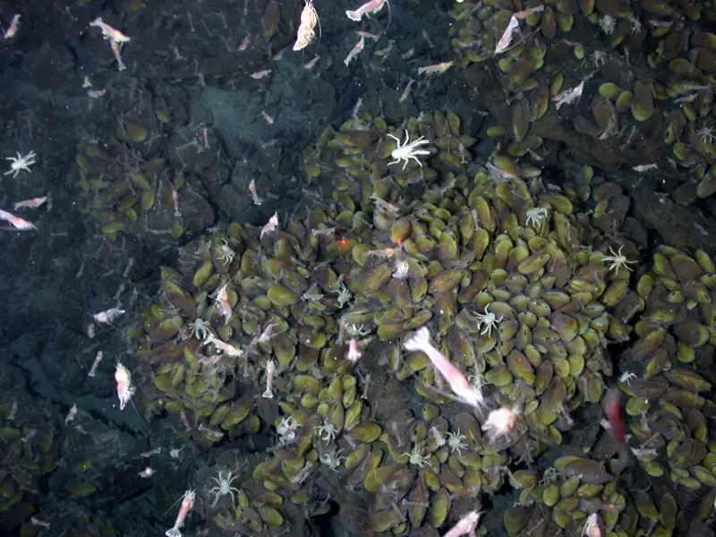
Productivity within Trophic Levels¶
Productivity within an ecosystem can be defined as the percentage of energy entering the ecosystem incorporated into biomass in a particular trophic level. Biomass is the total mass, in a unit area at the time of measurement, of living or previously living organisms within a trophic level. Ecosystems have characteristic amounts of biomass at each trophic level. For example, in the English Channel ecosystem the primary producers account for a biomass of 4 g/m2 (grams per square meter), while the primary consumers exhibit a biomass of 21 g/m2.
The productivity of the primary producers is especially important in any ecosystem because these organisms bring energy to other living organisms by photoautotrophy or chemoautotrophy. The rate at which photosynthetic primary producers incorporate energy from the sun is called gross primary productivity. An example of gross primary productivity is shown in the compartment diagram of energy flow within the Silver Springs aquatic ecosystem as shown (Figure 46.8). In this ecosystem, the total energy accumulated by the primary producers (gross primary productivity) was shown to be 20,810 kcal/m2/yr.
Because all organisms need to use some of this energy for their own functions (like respiration and resulting metabolic heat loss) scientists often refer to the net primary productivity of an ecosystem. Net primary productivity is the energy that remains in the primary producers after accounting for the organisms’ respiration and heat loss. The net productivity is then available to the primary consumers at the next trophic level. In our Silver Springs example, 13,187 of the 20,810 kcal/m2/yr were used for respiration or were lost as heat, leaving 7,633 kcal/m2/yr of energy for use by the primary consumers.
Ecological Efficiency: The Transfer of Energy between Trophic Levels¶
As illustrated in (Figure 46.8), as energy flows from primary producers through the various trophic levels, the ecosystem loses large amounts of energy. The main reason for this loss is the second law of thermodynamics, which states that whenever energy is converted from one form to another, there is a tendency toward disorder (entropy) in the system. In biologic systems, this energy takes the form of metabolic heat, which is lost when the organisms consume other organisms. In the Silver Springs ecosystem example (Figure 46.8), we see that the primary consumers produced 1103 kcal/m2/yr from the 3373 kcal/m2/yr of energy available to them from the primary producers. (The primary consumers used 3373 kcal/m2/yr from the 7618 kcal/m2/yr produced by the primary producers, as 4250 kcal/m2/yr goes to the decomposers.) The measurement of energy transfer efficiency between two successive trophic levels is termed the trophic level transfer efficiency (TLTE) and is defined by the formula:
In Silver Springs, the TLTE between the first two trophic levels was approximately 14.48 percent. The low efficiency of energy transfer between trophic levels is usually the major factor that limits the length of food chains observed in a food web. The fact is, after four to six energy transfers, there is not enough energy left to support another trophic level. In the Lake Ontario example shown in (Figure 46.6), only three energy transfers occurred between the primary producer, (green algae), and the apex consumer (Chinook salmon).
Ecologists have many different methods of measuring energy transfers within ecosystems. Measurement difficulty depends on the complexity of the ecosystem and how much access scientists have to observe the ecosystem. In other words, some ecosystems are more difficult to study than others, and sometimes the quantification of energy transfers has to be estimated.
Other parameters are important in characterizing energy flow within an ecosystem. Net production efficiency (NPE) allows ecologists to quantify how efficiently organisms of a particular trophic level incorporate the energy they receive into biomass; it is calculated using the following formula:
Net consumer productivity is the energy content available to the organisms of the next trophic level. Assimilation is the biomass (energy content generated per unit area) of the present trophic level after accounting for the energy lost due to incomplete ingestion of food, energy used for respiration, and energy lost as waste. Incomplete ingestion refers to the fact that some consumers eat only a part of their food. For example, when a lion kills an antelope, it will eat everything except the hide and bones. The lion is missing the energy-rich bone marrow inside the bone, so the lion does not make use of all the calories its prey could provide.
Thus, NPE measures how efficiently each trophic level uses and incorporates the energy from its food into biomass to fuel the next trophic level. In general, cold-blooded animals (ectotherms), such as invertebrates, fish, amphibians, and reptiles, use less of the energy they obtain for respiration and heat than warm-blooded animals (endotherms), such as birds and mammals. The extra heat generated in endotherms, although an advantage in terms of the activity of these organisms in colder environments, is a major disadvantage in terms of NPE. Therefore, many endotherms have to eat more often than ectotherms to get the energy they need for survival. In general, NPE for ectotherms is an order of magnitude (10x) higher than for endotherms. For example, the NPE for a caterpillar eating leaves has been measured at 18 percent, whereas the NPE for a squirrel eating acorns may be as low as 1.6 percent.
The inefficiency of energy use by warm-blooded animals has broad implications for the world's food supply. It is widely accepted that the meat industry uses large amounts of crops to feed livestock, and because the NPE is low, much of the energy from animal feed is lost. For example, it costs about $0.01 to produce 1000 dietary calories (kcal) of corn or soybeans, but approximately $0.19 to produce a similar number of calories growing cattle for beef consumption. The same energy content of milk from cattle is also costly, at approximately $0.16 per 1000 kcal. Much of this difference is due to the low NPE of cattle. Thus, there has been a growing movement worldwide to promote the consumption of nonmeat and nondairy foods so that less energy is wasted feeding animals for the meat industry.
Modeling Ecosystems Energy Flow: Ecological Pyramids¶
The structure of ecosystems can be visualized with ecological pyramids, which were first described by the pioneering studies of Charles Elton in the 1920s. Ecological pyramids show the relative amounts of various parameters (such as number of organisms, energy, and biomass) across trophic levels.
Pyramids of numbers can be either upright or inverted, depending on the ecosystem. As shown in Figure 46.10, typical grassland during the summer has a base of many plants, and the numbers of organisms decrease at each trophic level. However, during the summer in a temperate forest, the base of the pyramid consists of few trees compared with the number of primary consumers, mostly insects. Because trees are large, they have great photosynthetic capability, and dominate other plants in this ecosystem to obtain sunlight. Even in smaller numbers, primary producers in forests are still capable of supporting other trophic levels.
Another way to visualize ecosystem structure is with pyramids of biomass. This pyramid measures the amount of energy converted into living tissue at the different trophic levels. Using the Silver Springs ecosystem example, this data exhibits an upright biomass pyramid (Figure 46.10), whereas the pyramid from the English Channel example is inverted. The plants (primary producers) of the Silver Springs ecosystem make up a large percentage of the biomass found there. However, the phytoplankton in the English Channel example make up less biomass than the primary consumers, the zooplankton. As with inverted pyramids of numbers, this inverted pyramid is not due to a lack of productivity from the primary producers, but results from the high turnover rate of the phytoplankton. The phytoplankton are consumed rapidly by the primary consumers, thus, minimizing their biomass at any particular point in time. However, phytoplankton reproduce quickly, thus they are able to support the rest of the ecosystem.
Pyramid ecosystem modeling can also be used to show energy flow through the trophic levels. Notice that these numbers are the same as those used in the energy flow compartment diagram in (Figure 46.8). Pyramids of energy are always upright, and an ecosystem without sufficient primary productivity cannot be supported. All types of ecological pyramids are useful for characterizing ecosystem structure. However, in the study of energy flow through the ecosystem, pyramids of energy are the most consistent and representative models of ecosystem structure (Figure 46.10).
Visual Connection
![Section A, biomass, indicated by dry mass g slash m squared. On the left is a pyramid diagram of dry biomass in grams per meter squared in Silver Springs, Florida. The biomass of plants is 809. The biomass of primary consumers, including herbivorous insects and snails is 37. The biomass of secondary consumer fishes is 11, and the biomass of tertiary consumer fishes is 5. Primary, secondary and tertiary decomposers have a combined biomass of 5. On the right is a pyramid diagram of dry biomass in grams per meter squared in the English Channel. The biomass is 4 phytoplankton and 21 zooplankton. Section B, number of individuals per 0.1 hectare. On the left is a pyramid diagram of the number of individuals per 0.1 hectare in a summer grassland. There are 1,500,000 grass plants, 200,000 herbivorous insects, 90,000 predatory insects, and 1 bird On the right is a pyramid diagram of organisms per 0.1 hectare in a temperate forest. There are 200 trees, 150,000 herbivorous insects, 120,000 predatory insects, and 5 birds. Section C, energy, k cal slash m squared slash year. In Silver Springs Florida, the energy of plants is 20,810. The energy of primary consumers, including insects and snails, is 3,368. The energy of secondary consumer fishes is 383, and the energy of tertiary consumer fishes is 21. The energy of decomposers, including fungi and bacteria, is 5,060.](img/figure-46-02-02.webp)
Pyramids depicting the number of organisms or biomass may be inverted, upright, or even diamond-shaped. Energy pyramids, however, are always upright. Why?
Consequences of Food Webs: Biological Magnification¶
One of the most important environmental consequences of ecosystem dynamics is biomagnification. Biomagnification is the increasing concentration of persistent, toxic substances in organisms at each trophic level, from the primary producers to the apex consumers. Many substances have been shown to bioaccumulate, including the pesticide dichlorodiphenyltrichloroethane (DDT), which was described in the 1960s bestseller, Silent Spring, by marine biologist Rachel Carson. DDT was a commonly used pesticide before its dangers became known. In some aquatic ecosystems, organisms from each trophic level consumed many organisms of the lower level, which caused DDT to increase in birds (apex consumers) that ate fish. Thus, the birds accumulated sufficient amounts of DDT to cause fragility in their eggshells. This effect increased egg breakage during nesting and was shown to have adverse effects on these bird populations. Carson's combination of scientific knowledge and illuminating writing helped raise awareness about overall environmental issues as well as the specifics of the pesticide. The use of DDT was banned in the United States in the 1970s.
Other substances that biomagnify are polychlorinated biphenyls (PCBs), which were used in coolant liquids in the United States until their use was banned in 1979, and heavy metals, such as mercury, lead, and cadmium. These substances were best studied in aquatic ecosystems, where fish species at different trophic levels accumulate toxic substances brought through the ecosystem by the primary producers. As illustrated in a study performed by the National Oceanic and Atmospheric Administration (NOAA) in the Saginaw Bay of Lake Huron (Figure 46.11), PCB concentrations increased from the ecosystem’s primary producers (phytoplankton) through the different trophic levels of fish species. The apex consumer (walleye) has more than four times the amount of PCBs compared to phytoplankton. Also, based on results from other studies, birds that eat these fish may have PCB levels at least one order of magnitude higher than those found in the lake fish.
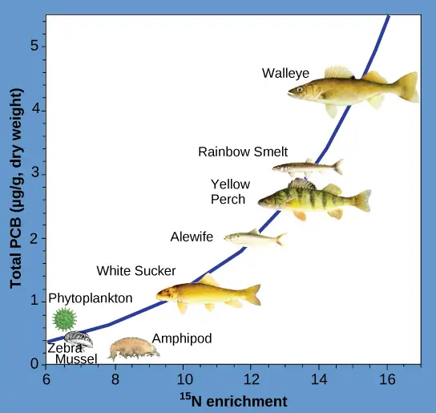
Other concerns have been raised by the accumulation of heavy metals, such as mercury and cadmium, in certain types of seafood. The United States Environmental Protection Agency (EPA) recommends that pregnant people and young children should not consume any swordfish, shark, king mackerel, or tilefish because of their high mercury content. These individuals are advised to eat fish low in mercury: salmon, tilapia, shrimp, pollock, and catfish. Biomagnification is a good example of how ecosystem dynamics can affect our everyday lives, even influencing the food we eat.
46.3 Biogeochemical Cycles¶
Learning Objectives
By the end of this section, you will be able to do the following:
- Discuss the biogeochemical cycles of water, carbon, nitrogen, phosphorus, and sulfur
- Explain how human activities have impacted these cycles and the potential consequences for Earth
Energy flows directionally through ecosystems, entering as sunlight (or inorganic molecules for chemoautotrophs) and leaving as heat during the many transfers between trophic levels. However, the matter that makes up living organisms is conserved and recycled. The six most common elements associated with organic molecules—carbon, nitrogen, hydrogen, oxygen, phosphorus, and sulfur—take a variety of chemical forms and may exist for long periods in the atmosphere, on land, in water, or beneath the Earth’s surface. Geologic processes, such as weathering, erosion, water drainage, and the subduction of the tectonic plates, all play a role in this recycling of materials. Because geology and chemistry have major roles in the study of this process, the recycling of inorganic matter between living organisms and their environment is called a biogeochemical cycle.
Water contains hydrogen and oxygen, which is essential to all living processes. The hydrosphere is the area of the Earth where water movement and storage occurs. On or beneath the surface, water occurs in liquid or solid form in rivers, lakes, oceans, groundwater, polar ice caps, and glaciers. And it occurs as water vapor in the atmosphere. Carbon is found in all organic macromolecules and is an important constituent of fossil fuels. Nitrogen is a major component of our nucleic acids and proteins and is critical to human agriculture. Phosphorus, a major component of nucleic acid (along with nitrogen), is one of the main ingredients in artificial fertilizers used in agriculture and their associated environmental impacts on our surface water. Sulfur is critical to the 3-D folding of proteins, such as in disulfide binding.
The cycling of these elements is interconnected. For example, the movement of water is critical for the leaching of nitrogen and phosphate into rivers, lakes, and oceans. Furthermore, the ocean itself is a major reservoir for carbon. Thus, mineral nutrients are cycled, either rapidly or slowly, through the entire biosphere, from one living organism to another, and between the biotic and abiotic world.
Interactive
Head to this website to learn more about biogeochemical cycles.
The Water (Hydrologic) Cycle¶
Water is the basis of all living processes on Earth. When examining the stores of water on Earth, 97.5 percent of it is non-potable salt water (Figure 46.12). Of the remaining water, 99 percent is locked underground as water or as ice. Thus, less than 1 percent of fresh water is easily accessible from lakes and rivers. Many living things, such as plants, animals, and fungi, are dependent on that small amount of fresh surface water, a lack of which can have massive effects on ecosystem dynamics. To be successful, organisms must adapt to fluctuating water supplies. Humans, of course, have developed technologies to increase water availability, such as digging wells to harvest groundwater, storing rainwater, and using desalination to obtain drinkable water from the ocean.
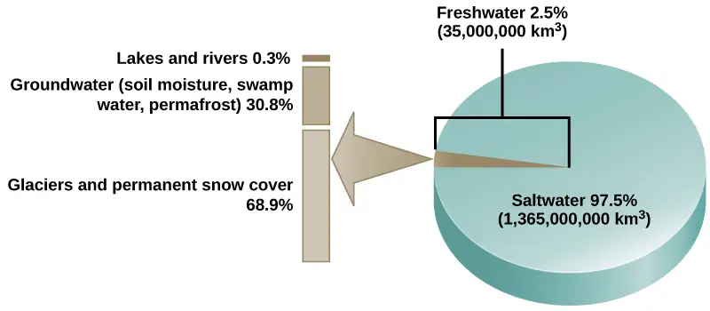
Water cycling is extremely important to ecosystem dynamics. Water has a major influence on climate and, thus, on the environments of ecosystems. Most of the water on Earth is stored for long periods in the oceans, underground, and as ice. Figure 46.13 illustrates the average time that an individual water molecule may spend in the Earth’s major water reservoirs. Residence time is a measure of the average time an individual water molecule stays in a particular reservoir.
![Bars on the graph show the average residence time for water molecules in various reservoirs. The residence time for glaciers and permafrost is 1,000 to 10,000 years. The residence time for groundwater is 2 weeks to 10,000 years. The residence time for oceans and seas is 4,000 years. The residence time for lakes and reservoirs is 10 years. The residence time for swamps is 1 to ten years. The residence time for soil moisture is 2 weeks to 1 year. The residence time for rivers is 2 weeks. The atmospheric residence time is 1.5 weeks. The biospheric residence time, or residence time in living organisms, is 1 week.](img/figure-46-03-02.webp)
There are various processes that occur during the cycling of water, shown in Figure 46.14. These processes include the following:
- evaporation/sublimation
- condensation/precipitation
- subsurface water flow
- surface runoff/snowmelt
- streamflow
The water cycle is driven by the sun’s energy as it warms the oceans and other surface waters. This leads to the evaporation (water to water vapor) of liquid surface water and the sublimation (ice to water vapor) of frozen water, which deposits large amounts of water vapor into the atmosphere. Over time, this water vapor condenses into clouds as liquid or frozen droplets and is eventually followed by precipitation (rain or snow), which returns water to the Earth’s surface. Rain eventually permeates into the ground, where it may evaporate again if it is near the surface, flow beneath the surface, or be stored for long periods. More easily observed is surface runoff: the flow of fresh water either from rain or melting ice. Runoff can then make its way through streams and lakes to the oceans or flow directly to the oceans themselves.
Interactive
Head to this website to learn more about the world’s fresh water supply.
Rain and surface runoff are major ways in which minerals, including carbon, nitrogen, phosphorus, and sulfur, are cycled from land to water. The environmental effects of runoff will be discussed later as these cycles are described.
![Illustration shows the water cycle. Water enters the atmosphere through evaporation, evapotranspiration, sublimation, and volcanic steam. Condensation in the atmosphere turns water vapor into clouds. Water from the atmosphere returns to the Earth via precipitation or desublimation. Some of this water infiltrates the ground to become groundwater. Seepage, freshwater springs, and plant uptake return some of this water to the surface. The remaining water seeps into the oceans. The remaining surface water enters streams and freshwater lakes, where it eventually enters the ocean via surface runoff. Some water also enters the ocean via underwater vents or volcanoes.](img/figure-b46-03-03.webp)
The Carbon Cycle¶
Carbon is the second most abundant element in living organisms. Carbon is present in all organic molecules, and its role in the structure of macromolecules is of primary importance to living organisms.
The carbon cycle is most easily studied as two interconnected sub-cycles: one dealing with rapid carbon exchange among living organisms and the other dealing with the long-term cycling of carbon through geologic processes. The entire carbon cycle is shown in Figure 46.15.
![The illustration shows the carbon cycle. Carbon enters the atmosphere as carbon dioxide gas that is released from human emissions, respiration and decomposition, and volcanic emissions. Carbon dioxide is removed from the atmosphere by marine and terrestrial photosynthesis. Carbon from the weathering of rocks and decomposition of organisms becomes soil carbon, which over time can become fossil carbon. Carbon enters the ocean from land via leaching and runoff. Uplifting of ocean sediments can return carbon to land.](img/figure-b46-03-04-carbon.webp)
Interactive
Click this link to read information about the United States Carbon Cycle Science Program.
The Biological Carbon Cycle¶
Living organisms are connected in many ways, even between ecosystems. A good example of this connection is the exchange of carbon between autotrophs and heterotrophs within and between ecosystems by way of atmospheric carbon dioxide. Carbon dioxide is the basic building block that most autotrophs use to build multicarbon, high energy compounds, such as glucose. The energy harnessed from the sun is used by these organisms to form the covalent bonds that link carbon atoms together. These chemical bonds thereby store this energy for later use in the process of respiration. Most terrestrial autotrophs obtain their carbon dioxide directly from the atmosphere, while marine autotrophs acquire it in the dissolved form from the partial ionization of carbonic acid into bicarbonate ions (H2CO3−). However carbon dioxide is acquired, a by-product of the process is oxygen. The photosynthetic organisms are responsible for creating the oxygen content of our atmosphere; oxygen makes up approximately 21 percent of the atmosphere that we observe today.
Heterotrophs and autotrophs are partners in biological carbon exchange (especially the primary consumers, largely herbivores). Heterotrophs acquire the high-energy carbon compounds from the autotrophs by consuming them, and breaking them down by respiration to obtain cellular energy, such as ATP. The most efficient type of respiration, aerobic respiration, requires oxygen obtained from the atmosphere or dissolved in water. Thus, there is a constant exchange of oxygen and carbon dioxide between the autotrophs (which need the carbon) and the heterotrophs (which need the oxygen). Gas exchange through the atmosphere and water is one way that the carbon cycle connects all living organisms on Earth.
The Biogeochemical Carbon Cycle¶
The movement of carbon through the land, water, and air is complex, and in many cases, it occurs much more slowly geologically than as seen between living organisms. Carbon is stored for long periods in what are known as carbon reservoirs, which include the atmosphere, bodies of liquid water (mostly oceans), ocean sediment, soil, land sediments (including fossil fuels), and the Earth’s interior.
As stated, the atmosphere is a major reservoir of carbon in the form of carbon dioxide and is essential to the process of photosynthesis. The level of carbon dioxide in the atmosphere is greatly influenced by the reservoir of carbon in the oceans. The exchange of carbon between the atmosphere and water reservoirs influences how much carbon is found in each location, and each one affects the other reciprocally. Carbon dioxide (CO2) from the atmosphere dissolves in water and combines with water molecules to form carbonic acid, and then it ionizes to carbonate and bicarbonate ions (Figure 46.16)
![In step 1, atmospheric carbon dioxide dissolves in water. In step 2 dissolved carbon dioxide, which is written as upper case C upper case O subscript 2 baseline, reacts with water, written as upper case H subscript 2 baseline upper case O, to form carbonic acid which is upper H subscript 2 baseline upper C upper O subscript 3 baseline. In step 3, carbonic acid dissociates into a proton, shown as upper case H plus sign, and a bicarbonate ion, shown as upper H upper C upper O subscript 3 negative. In step 4 the bicarbonate ion dissociates into another proton and a carbonate ion, shown as upper C upper O subscript 3 baseline superscript two negative.](img/figure-46-03-05.webp)
The equilibrium coefficients are such that more than 90 percent of the carbon in the ocean is found as bicarbonate ions. Some of these ions combine with seawater calcium to form calcium carbonate (CaCO3), a major component of marine organism shells. These organisms eventually form sediments on the ocean floor. Over geologic time, the calcium carbonate forms limestone, which comprises the largest carbon reservoir on Earth.
On land, carbon is stored in soil as a result of the decomposition of living organisms (by decomposers) or from weathering of terrestrial rock and minerals. This carbon can be leached into the water reservoirs by surface runoff. Deeper underground, on land and at sea, are fossil fuels: the anaerobically decomposed remains of plants that take millions of years to form. Fossil fuels are considered a nonrenewable resource because their use far exceeds their rate of formation. A nonrenewable resource, such as fossil fuel, is either regenerated very slowly or not at all. Another way for carbon to enter the atmosphere is from land (including land beneath the surface of the ocean) by the eruption of volcanoes and other geothermal systems. Carbon sediments from the ocean floor are taken deep within the Earth by the process of subduction: the movement of one tectonic plate beneath another. Carbon is released as carbon dioxide when a volcano erupts or from volcanic hydrothermal vents.
Humans contribute to atmospheric carbon by the burning of fossil fuels and other materials. Since the Industrial Revolution, humans have significantly increased the release of carbon and carbon compounds, which has in turn affected the climate and overall environment.
Animal husbandry by humans also increases atmospheric carbon. The large numbers of land animals raised to feed the Earth’s growing population results in increased carbon dioxide levels in the atmosphere due to farming practices and respiration and methane production. This is another example of how human activity indirectly affects biogeochemical cycles in a significant way. Although much of the debate about the future effects of increasing atmospheric carbon on climate change focuses on fossils fuels, scientists take natural processes, such as volcanoes and respiration, into account as they model and predict the future impact of this increase.
The Nitrogen Cycle¶
Getting nitrogen into the living world is difficult. Plants and phytoplankton are not equipped to incorporate nitrogen from the atmosphere (which exists as tightly bonded, triple covalent N2) even though this molecule comprises approximately 78 percent of the atmosphere. Nitrogen enters the living world via free-living and symbiotic bacteria, which incorporate nitrogen into their macromolecules through nitrogen fixation (conversion of N2). Cyanobacteria live in most aquatic ecosystems where sunlight is present; they play a key role in nitrogen fixation. Cyanobacteria are able to use inorganic sources of nitrogen to “fix” nitrogen. Rhizobium bacteria live symbiotically in the root nodules of legumes (such as peas, beans, and peanuts) and provide them with the organic nitrogen they need. (For example, gardeners often grow peas both for their produce and to naturally add nitrogen to the soil. This practice goes back to ancient times, even if the science has only been recently understood.) Free-living bacteria, such as Azotobacter, are also important nitrogen fixers.
Organic nitrogen is especially important to the study of ecosystem dynamics since many ecosystem processes, such as primary production and decomposition, are limited by the available supply of nitrogen. As shown in Figure 46.17, the nitrogen that enters living systems by nitrogen fixation is successively converted from organic nitrogen back into nitrogen gas by bacteria. This process occurs in three steps in terrestrial systems: ammonification, nitrification, and denitrification. First, the ammonification process converts nitrogenous waste from living animals or from the remains of dead animals into ammonium (NH4+) by certain bacteria and fungi. Second, the ammonium is converted to nitrites (NO2−) by nitrifying bacteria, such as Nitrosomonas, through nitrification. Subsequently, nitrites are converted to nitrates (NO3−) by similar organisms. Third, the process of denitrification occurs, whereby bacteria, such as Pseudomonas and Clostridium, convert the nitrates into nitrogen gas, allowing it to reenter the atmosphere.
Visual Connection
![This illustration shows the nitrogen cycle. Nitrogen gas from the atmosphere is fixed into organic nitrogen by nitrogen-fixing bacteria. This organic nitrogen enters terrestrial food webs, and it leaves the food webs as nitrogenous wastes in the soil. Ammonification of this nitrogenous waste by bacteria and fungi in the soil converts the organic nitrogen to ammonium ion, or upper N upper H 4 plus. Ammonium is converted to nitrite, or upper N upper O 2 minus, then to nitrate, or upper N upper O 3 minus by nitrifying bacteria. Denitrifying bacteria convert the nitrate back into nitrogen gas, which re-enters the atmosphere. Nitrogen from runoff and fertilizers enters the ocean, where it enters marine food webs. Some organic nitrogen falls to the ocean floor as sediment. Other organic nitrogen in the ocean is converted to nitrite and nitrate ions, which is then converted to nitrogen gas in a process analogous to the one that occurs on land.](img/figure-b46-03-05.webp)
Which of the following statements about the nitrogen cycle is false?
- Ammonification converts organic nitrogenous matter from living organisms into ammonium (NH4+).
- Denitrification by bacteria converts nitrates (NO3−) to nitrogen gas (N2).
- Nitrification by bacteria converts nitrates (NO3−) to nitrites (NO2−).
- Nitrogen fixing bacteria convert nitrogen gas (N2) into organic compounds.
Human activity can release nitrogen into the environment by two primary means: the combustion of fossil fuels, which releases different nitrogen oxides, and by the use of artificial fertilizers in agriculture, which are then washed into lakes, streams, and rivers by surface runoff. Atmospheric nitrogen is associated with several effects on Earth’s ecosystems including the production of acid rain (as nitric acid, HNO3) and greenhouse gas (as nitrous oxide, N2O) potentially causing climate change. A major effect from fertilizer runoff is saltwater and freshwater eutrophication, a process whereby nutrient runoff causes the excess growth of microorganisms, depleting dissolved oxygen levels and killing ecosystem fauna.
A similar process occurs in the marine nitrogen cycle, where the ammonification, nitrification, and denitrification processes are performed by marine bacteria. Some of this nitrogen falls to the ocean floor as sediment, which can then be moved to land in geologic time by uplift of the Earth’s surface and thereby incorporated into terrestrial rock. Although the movement of nitrogen from rock directly into living systems has been traditionally seen as insignificant compared with nitrogen fixed from the atmosphere, a recent study showed that this process may indeed be significant and should be included in any study of the global nitrogen cycle.3
The Phosphorus Cycle¶
Phosphorus is an essential nutrient for living processes; it is a major component of nucleic acid and phospholipids, and, as calcium phosphate, makes up the supportive components of our bones. Phosphorus is often the limiting nutrient (necessary for growth) in aquatic ecosystems (Figure 46.18).
Phosphorus occurs in nature as the phosphate ion (PO43−). In addition to phosphate runoff as a result of human activity, natural surface runoff occurs when it is leached from phosphate-containing rock by weathering, thus sending phosphates into rivers, lakes, and the ocean. This rock has its origins in the ocean. Phosphate-containing ocean sediments form primarily from the bodies of ocean organisms and from their excretions. However, in remote regions, volcanic ash, aerosols, and mineral dust may also be significant phosphate sources. This sediment then is moved to land over geologic time by the uplifting of areas of the Earth’s surface.
Phosphorus is also reciprocally exchanged between phosphate dissolved in the ocean and marine ecosystems. The movement of phosphate from the ocean to the land and through the soil is extremely slow, with the average phosphate ion having an oceanic residence time between 20,000 and 100,000 years.
![The illustration shows the phosphorus cycle. Phosphate enters the atmosphere from volcanic aerosols. As this aerosol precipitates to Earth, it enters terrestrial food webs. Some of the phosphate from terrestrial food webs dissolves in streams and lakes, and the remainder enters the soil. Another source of phosphate is fertilizers. Phosphate enters the ocean via leaching and runoff, where it becomes dissolved in ocean water or enters marine food webs. Some phosphate falls to the ocean floor where it becomes sediment. If uplifting occurs, this sediment can return to land.](img/figure-b46-03-06.webp)
As discussed in Ecology and the Biosphere, excess phosphorus and nitrogen that enters these ecosystems from fertilizer runoff and from sewage causes excessive growth of microorganisms and depletes the dissolved oxygen, which leads to the death of many ecosystem fauna, such as shellfish and finfish. This process is responsible for dead zones in lakes and at the mouths of many major rivers (Figure 46.19).
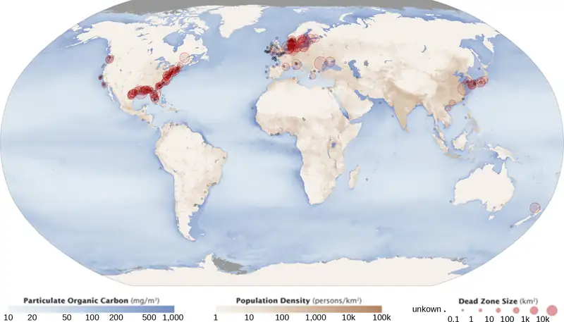
As discussed earlier, a dead zone is an area within a freshwater or marine ecosystem where large areas are depleted of their normal flora and fauna; these zones can be caused by eutrophication, oil spills, dumping of toxic chemicals, and other human activities. The number of dead zones has been increasing for several years, and more than 400 of these zones were present as of 2008. One of the worst dead zones is off the coast of the United States in the Gulf of Mexico, where fertilizer runoff from the Mississippi River basin has created a dead zone of over 8463 square miles. Phosphate and nitrate runoff from fertilizers also negatively affect several lake and bay ecosystems including the Chesapeake Bay in the eastern United States.
Everyday Connection: Chesapeake Bay
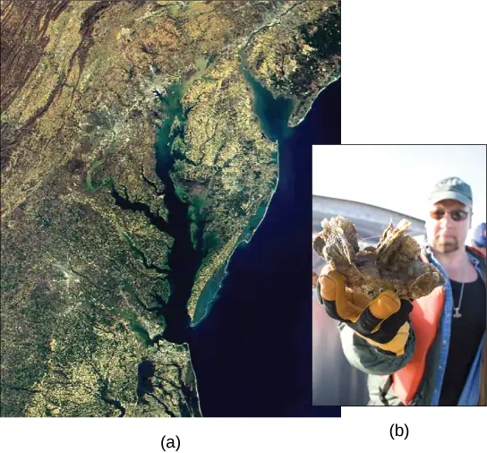
The Chesapeake Bay has long been valued as one of the most scenic areas on Earth; it is now in distress and is recognized as a declining ecosystem. In the 1970s, the Chesapeake Bay was one of the first ecosystems to have identified dead zones, which continue to kill many fish and bottom-dwelling species, such as clams, oysters, and worms. Several species have declined in the Chesapeake Bay due to surface water runoff containing excess nutrients from artificial fertilizer used on land. The source of the fertilizers (with high nitrogen and phosphate content) is not limited to agricultural practices. There are many nearby urban areas and more than 150 rivers and streams empty into the bay that are carrying fertilizer runoff from lawns and gardens. Thus, the decline of the Chesapeake Bay is a complex issue and requires the cooperation of industry, agriculture, and everyday homeowners.
Of particular interest to conservationists is the oyster population; it is estimated that more than 200,000 acres of oyster reefs existed in the bay in the 1700s, but that number has now declined to only 36,000 acres. Oyster harvesting was once a major industry for Chesapeake Bay, but it declined 88 percent between 1982 and 2007. This decline was due not only to fertilizer runoff and dead zones but also to overharvesting. Oysters require a certain minimum population density because they must be in close proximity to reproduce. Human activity has altered the oyster population and locations, greatly disrupting the ecosystem.
The restoration of the oyster population in the Chesapeake Bay has been ongoing for several years with mixed success. Not only do many people find oysters good to eat, but they also clean up the bay. Oysters are filter feeders, and as they eat, they clean the water around them. In the 1700s, it was estimated that it took only a few days for the oyster population to filter the entire volume of the bay. Today, with changed water conditions, it is estimated that the present population would take nearly a year to do the same job.
Restoration efforts have been ongoing for several years by nonprofit organizations, such as the Chesapeake Bay Foundation. The restoration goal is to find a way to increase population density so the oysters can reproduce more efficiently. Many disease-resistant varieties (developed at the Virginia Institute of Marine Science for the College of William and Mary) are now available and have been used in the construction of experimental oyster reefs. Efforts to clean and restore the bay by Virginia and Delaware have been hampered because much of the pollution entering the bay comes from other states, which stresses the need for interstate cooperation to gain successful restoration.
The new, hearty oyster strains have also spawned a new and economically viable industry—oyster aquaculture—which not only supplies oysters for food and profit, but also has the added benefit of cleaning the bay.
The Sulfur Cycle¶
Sulfur is an essential element for the macromolecules of living things. As a part of the amino acid cysteine, it is involved in the formation of disulfide bonds within proteins, which help to determine their 3-D folding patterns, and hence their functions. As shown in Figure 46.21, sulfur cycles between the oceans, land, and atmosphere. Atmospheric sulfur is found in the form of sulfur dioxide (SO2) and enters the atmosphere in three ways: from the decomposition of organic molecules, from volcanic activity and geothermal vents, and from the burning of fossil fuels by humans.
![This illustration shows the sulfur cycle. Sulfur enters the atmosphere as sulfur dioxide, or upper S upper O 2, via human emissions, decomposition of upper H 2 upper S, and volcanic eruptions. Precipitation and fallout from the atmosphere return sulfur to the Earth, where it enters terrestrial ecosystems. Sulfur enters the oceans via runoff, where it becomes incorporated in marine ecosystems. Some marine sulfur becomes pyrite, which is trapped in sediment. If upwelling occurs, the pyrite enters the soil and is converted to soil sulfates.](img/figure-b46-03-09-sulfur.webp)
On land, sulfur is deposited in four major ways: precipitation, direct fallout from the atmosphere, rock weathering, and geothermal vents (Figure 46.21). Atmospheric sulfur is found in the form of sulfur dioxide (SO2), and as rain falls through the atmosphere, sulfur is dissolved in the form of weak sulfurous acid (H2SO3). Sulfur can also fall directly from the atmosphere in a process called fallout. Also, the weathering of sulfur-containing rocks releases sulfur into the soil. These rocks originate from ocean sediments that are moved to land by the geologic uplifting of ocean sediments. Terrestrial ecosystems can then make use of these soil sulfates (\(\text{SO}_{4^{-}}\)), and upon the death and decomposition of these organisms, release the sulfur back into the atmosphere as hydrogen sulfide (H2S) gas.
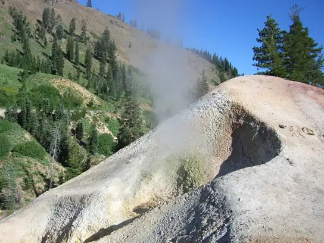
Sulfur enters the ocean via runoff from land, from atmospheric fallout, and from underwater geothermal vents. Some ecosystems (Figure 46.9) rely on chemoautotrophs using sulfur as a biological energy source. This sulfur then supports marine ecosystems in the form of sulfates.
Human activities have played a major role in altering the balance of the global sulfur cycle. The burning of large quantities of fossil fuels, especially from coal, releases larger amounts of sulfur dioxide and hydrogen sulfide gas into the atmosphere. Acid rain is caused by rainwater falling to the ground through mostly sulfur dioxide gas, turning it into weak sulfurous acid. Acid rain damages the natural environment by lowering the pH of lakes, which kills many of the resident fauna; it also affects the man-made environment through the chemical degradation of buildings. For example, many marble monuments, such as the Lincoln Memorial in Washington, DC, have suffered significant damage from acid rain over the years.
Interactive
Click this link to learn more about global climate change.
Chapter Review¶
Key Terms¶
- acid rain
- corrosive rain caused by rainwater falling to the ground through sulfur dioxide gas, turning it into weak sulfuric acid; can damage structures and ecosystems
- analytical model
- ecosystem model that is created with mathematical formulas to predict the effects of environmental disturbances on ecosystem structure and dynamics
- apex consumer
- organism at the top of the food chain
- assimilation
- biomass consumed and assimilated from the previous trophic level after accounting for the energy lost due to incomplete ingestion of food, energy used for respiration, and energy lost as waste
- biogeochemical cycle
- cycling of mineral nutrients through ecosystems and through the nonliving world
- biomagnification
- increasing concentrations of persistent, toxic substances in organisms at each trophic level, from the primary producers to the apex consumers
- biomass
- total weight, at the time of measurement, of living or previously living organisms in a unit area within a trophic level
- chemoautotroph
- organism capable of synthesizing its own food using energy from inorganic molecules
- conceptual model
- (also, compartment model) ecosystem model that consists of flow charts that show the interactions of different compartments of the living and nonliving components of the ecosystem
- dead zone
- area within an ecosystem in lakes and near the mouths of rivers where large areas of ecosystems are depleted of their normal flora and fauna; these zones can be caused by eutrophication, oil spills, dumping of toxic chemicals, and other human activities
- detrital food web
- type of food web in which the primary consumers consist of decomposers; these are often associated with grazing food webs within the same ecosystem
- ecological pyramid
- (also, Eltonian pyramid) graphical representation of different trophic levels in an ecosystem based of organism numbers, biomass, or energy content
- ecosystem
- community of living organisms and their interactions with their abiotic environment
- ecosystem dynamics
- study of the changes in ecosystem structure caused by changes in the environment or internal forces
- equilibrium
- steady state of an ecosystem where all organisms are in balance with their environment and each other
- eutrophication
- process whereby nutrient runoff causes the excess growth of microorganisms, depleting dissolved oxygen levels and killing ecosystem fauna
- fallout
- direct deposit of solid minerals on land or in the ocean from the atmosphere
- food chain
- linear representation of a chain of primary producers, primary consumers, and higher-level consumers used to describe ecosystem structure and dynamics
- food web
- graphic representation of a holistic, nonlinear web of primary producers, primary consumers, and higher-level consumers used to describe ecosystem structure and dynamics
- grazing food web
- type of food web in which the primary producers are either plants on land or phytoplankton in the water; often associated with a detrital food web within the same ecosystem
- gross primary productivity
- rate at which photosynthetic primary producers incorporate energy from the sun
- holistic ecosystem model
- study that attempts to quantify the composition, interactions, and dynamics of entire ecosystems; often limited by economic and logistical difficulties, depending on the ecosystem
- hydrosphere
- area of the Earth where water movement and storage occurs
- mesocosm
- portion of a natural ecosystem to be used for experiments
- microcosm
- re-creation of natural ecosystems entirely in a laboratory environment to be used for experiments
- net consumer productivity
- energy content available to the organisms of the next trophic level
- net primary productivity
- energy that remains in the primary producers after accounting for the organisms’ respiration and heat loss
- net production efficiency (NPE)
- measure of the ability of a trophic level to convert the energy it receives from the previous trophic level into biomass
- nonrenewable resource
- resource, such as fossil fuel, that is either regenerated very slowly or not at all
- primary consumer
- trophic level that obtains its energy from the primary producers of an ecosystem
- primary producer
- trophic level that obtains its energy from sunlight, inorganic chemicals, or dead and/or decaying organic material
- residence time
- measure of the average time an individual water molecule stays in a particular reservoir
- resilience (ecological)
- speed at which an ecosystem recovers equilibrium after being disturbed
- resistance (ecological)
- ability of an ecosystem to remain at equilibrium in spite of disturbances
- secondary consumer
- usually a carnivore that eats primary consumers
- simulation model
- ecosystem model that is created with computer programs to holistically model ecosystems and to predict the effects of environmental disturbances on ecosystem structure and dynamics
- subduction
- movement of one tectonic plate beneath another
- tertiary consumer
- carnivore that eats other carnivores
- trophic level
- position of a species or group of species in a food chain or a food web
- trophic level transfer efficiency (TLTE)
- energy transfer efficiency between two successive trophic levels
Summary¶
46.1 Ecology of Ecosystems¶
Ecosystems exist on land, at sea, in the air, and underground. Different ways of modeling ecosystems are necessary to understand how environmental disturbances will affect ecosystem structure and dynamics. Conceptual models are useful to show the general relationships between organisms and the flow of materials or energy between them. Analytical models are used to describe linear food chains, and simulation models work best with holistic food webs.
46.2 Energy Flow through Ecosystems¶
Organisms in an ecosystem acquire energy in a variety of ways, which is transferred between trophic levels as the energy flows from the bottom to the top of the food web, with energy being lost at each transfer. The efficiency of these transfers is important for understanding the different behaviors and eating habits of warm-blooded versus cold-blooded animals. Modeling of ecosystem energy is best done with ecological pyramids of energy, although other ecological pyramids provide other vital information about ecosystem structure.
46.3 Biogeochemical Cycles¶
Mineral nutrients are cycled through ecosystems and their environment. Of particular importance are water, carbon, nitrogen, phosphorus, and sulfur. All of these cycles have major impacts on ecosystem structure and function. A variety of human activities, such as pollution, oil spills, and other events have damaged ecosystems, potentially causing global climate change. The health of Earth depends on understanding these cycles and how to protect the environment from irreversible damage.
Visual Connection Questions¶
46.1 Ecology of Ecosystems¶
1. Figure 46.8 Why do you think the value for gross productivity of the primary producers is the same as the value for total heat and respiration (20,810 kcal/m2/yr)?
Answer
Figure 46.8 According to the first law of thermodynamics, energy can neither be created nor destroyed. Eventually, all energy consumed by living systems is lost as heat or used for respiration, and the total energy output of the system must equal the energy that went into it.
46.2 Energy Flow through Ecosystems¶
2. Figure 46.10 Pyramids depicting the number of organisms or biomass may be inverted, upright, or even diamond-shaped. Energy pyramids, however, are always upright. Why?
Answer
Figure 46.10 Pyramids of organisms may be inverted or diamond-shaped because a large organism, such as a tree, can sustain many smaller organisms. Likewise, a low biomass of organisms can sustain a larger biomass at the next trophic level because the organisms reproduce rapidly and thus supply continuous nourishment. Energy pyramids, however, must always be upright because of the laws of thermodynamics. The first law of thermodynamics states that energy can neither be created nor destroyed; thus, each trophic level must acquire energy from the trophic level below. The second law of thermodynamics states that, during the transfer of energy, some energy is always lost as heat; thus, less energy is available at each higher trophic level.
46.3 Biogeochemical Cycles¶
3. Figure 46.17 Which of the following statements about the nitrogen cycle is false?
- Ammonification converts organic nitrogenous matter from living organisms into ammonium (NH4+).
- Denitrification by bacteria converts nitrates (NO3−) to nitrogen gas (N2).
- Nitrification by bacteria converts nitrates (NO3−) to nitrites (NO2−).
- Nitrogen fixing bacteria convert nitrogen gas (N2) into organic compounds.
Answer
Figure 46.17 C: Nitrification by bacteria converts nitrates (NO3−) to nitrites (NO2−).
Review Questions¶
46.1 Ecology of Ecosystems¶
4. The ability of an ecosystem to return to its equilibrium state after an environmental disturbance is called ________.
- resistance
- restoration
- reformation
- resilience
Answer
D
5. A re-created ecosystem in a laboratory environment is known as a ________.
- mesocosm
- simulation
- microcosm
- reproduction
Answer
C
6. Decomposers are associated with which class of food web?
- grazing
- detrital
- inverted
- aquatic
Answer
B
7. The primary producers in an ocean grazing food web are usually ________.
- plants
- animals
- fungi
- phytoplankton
Answer
D
8. What term describes the use of mathematical equations in the modeling of linear aspects of ecosystems?
- analytical modeling
- simulation modeling
- conceptual modeling
- individual-based modeling
Answer
A
9. The position of an organism along a food chain is known as its ________.
- locus
- location
- trophic level
- microcosm
Answer
C
10. The loss of an apex consumer would impact which trophic level of a food web?
- primary producers
- primary consumers
- secondary consumers
- all of the above
Answer
D
11. A food chain would be a better resource than a food web to answer which question?
- How does energy move from an organism in one trophic level to an organism on the next trophic level?
- How does energy move within a trophic level?
- What preys on grasses?
- How is organic matter recycled in a forest?
Answer
A
46.2 Energy Flow through Ecosystems¶
12. The weight of living organisms in an ecosystem at a particular point in time is called:
- energy
- production
- entropy
- biomass
Answer
D
13. Which term describes the process whereby toxic substances increase along trophic levels of an ecosystem?
- biomassification
- biomagnification
- bioentropy
- heterotrophy
Answer
B
14. Choose the term that encompasses all organisms that can make their own food using inorganic molecules:
- autotrophs
- heterotrophs
- photoautotrophs
- chemoautotrophs
Answer
D
15. In the English Channel ecosystem, the number of primary producers is smaller than the number of primary consumers because________.
- the apex consumers have a low turnover rate
- the primary producers have a low turnover rate
- the primary producers have a high turnover rate
- the primary consumers have a high turnover rate
Answer
C
16. What law of chemistry determines how much energy can be transferred when it is converted from one form to another?
- the first law of thermodynamics
- the second law of thermodynamics
- the conservation of matter
- the conservation of energy
Answer
B
17. The mussels that live at the NW Eifuku volcano are examples of _______.
- chemoautotrophs
- photoautotrophs
- apex predators
- primary consumers
Answer
D
46.3 Biogeochemical Cycles¶
18. The movement of mineral nutrients through organisms and their environment is called a ________ cycle.
- biological
- bioaccumulation
- biogeochemical
- biochemical
Answer
C
19. Carbon is present in the atmosphere as ________.
- carbon dioxide
- carbonate ion
- carbon dust
- carbon monoxide
Answer
A
20. The majority of water found on Earth is:
- ice
- water vapor
- fresh water
- salt water
Answer
D
21. The average time a molecule spends in its reservoir is known as ________.
- residence time
- restriction time
- resilience time
- storage time
Answer
A
22. The process whereby oxygen is depleted by the growth of microorganisms due to excess nutrients in aquatic systems is called ________.
- dead zoning
- eutrophication
- retrofication
- depletion
Answer
B
23. The process whereby nitrogen is brought into organic molecules is called ________.
- nitrification
- denitrification
- nitrogen fixation
- nitrogen cycling
Answer
C
24. Which of the following approaches would be the most effective way to reduce greenhouse carbon dioxide?
- Increase waste deposition into the deep ocean.
- Plant more environmentally-suitable plants.
- Increase use of fuel sources that do not produce carbon dioxide as a by-product.
- Decrease livestock agriculture.
Answer
B
25. How would loss of fungi in a forest effect biogeochemical cycles in the area?
- Nitrogen could no longer be fixed into organic molecules.
- Phosphorus stores would be released for use by other organisms.
- Sulfur release from eroding rocks would cease.
- Carbon would accumulate in dead organic matter and waste.
Answer
D
Critical Thinking Questions¶
46.1 Ecology of Ecosystems¶
26. Compare and contrast food chains and food webs. What are the strengths of each concept in describing ecosystems?
Answer
Food webs show interacting groups of different species and their many interconnections with each other and the environment. Food chains are linear aspects of food webs that describe the succession of organisms consuming one another at defined trophic levels. Food webs are a more accurate representation of the structure and dynamics of an ecosystem. Food chains are easier to model and use for experimental studies.
27. Describe freshwater, ocean, and terrestrial ecosystems.
Answer
Freshwater ecosystems are the rarest, but have great diversity of freshwater fish and other aquatic life. Ocean ecosystems are the most common and are responsible for much of the photosynthesis that occurs on Earth. Terrestrial ecosystems are very diverse; they are grouped based on their species and environment (biome), which includes forests, deserts, and tundras.
28. Compare grazing and detrital food webs. Why would they both be present in the same ecosystem?
Answer
Grazing food webs have a primary producer at their base, which is either a plant for terrestrial ecosystems or a phytoplankton for aquatic ecosystems. The producers pass their energy to the various trophic levels of consumers. At the base of detrital food webs are the decomposers, which pass this energy to a variety of other consumers. Detrital food webs are important for the health of many grazing food webs because they eliminate dead and decaying organic material, thus, clearing space for new organisms and removing potential causes of disease. By breaking down dead organic matter, decomposers also make mineral nutrients available to primary producers; this process is a vital link in nutrient cycling.
29. How does the microcosm modeling approach differ from utilizing a holistic model for ecological research?
Answer
In a microcosm model, an ecologist recreates an ecosystem in a controlled environment. Since the ecologist is populating the environment, he can control the variables and the different species involved in the study to ask specific questions.
30. How do conceptual and analytical models of ecosystems complement each other?
Answer
Conceptual models allow ecologists to see the “big picture” of how different components of the ecosystem interact with each other, energy sources, and resources. However, this approach is more descriptive than quantitative, so it is difficult to make conclusions about the resistance or resilience of a system. Analytical modeling creates a model that can predict how the ecosystem’s relationships will change in response to disturbances, but does not convey the complexity of the relationships seen with conceptual modeling.
46.2 Energy Flow through Ecosystems¶
31. Compare the three types of ecological pyramids and how well they describe ecosystem structure. Identify which ones can be inverted and give an example of an inverted pyramid for each.
Answer
Pyramids of numbers display the number of individual organisms on each trophic level. These pyramids can be either upright or inverted, depending on the number of the organisms. Pyramids of biomass display the weight of organisms at each level. Inverted pyramids of biomass can occur when the primary producer has a high turnover rate. Pyramids of energy are usually upright and are the best representation of energy flow and ecosystem structure.
32. How does the amount of food a warm-blooded animal (endotherm) eats relate to its net production efficiency (NPE)?
Answer
NPE measures the rate at which one trophic level can use and make biomass from what it attained in the previous level, taking into account respiration, defecation, and heat loss. Endotherms have high metabolism and generate a lot of body heat. Although this gives them advantages in their activity level in colder temperatures, these organisms are 10 times less efficient at harnessing the energy from the food they eat compared with cold-blooded animals, and thus have to eat more and more often.
33. A study uses an inverted pyramid to demonstrate the relationship between sharks, their aquatic prey, and phytoplankton in an ocean region. What type of pyramid must be used? What does this convey to readers about predation in the area?
Answer
An inverted ecological pyramid describing the relationship between the three groups must be a biomass pyramid. This model suggests that the area is subject to heavy predation, with the prey species feeding heavily on the phytoplankton, and in turn being consumed by the sharks.
34. Describe what a pyramid of numbers would like if an ecologist models the relationship between bird parasites, blue jays, and oak trees in a hectare. Does this match the energy flow pyramid?
Answer
In this ecological model, the oak trees (producers) would be at the bottom, the blue jays would be in the middle level (primary consumer of acorns), and the parasites would be at the top level (secondary consumer). However, the pyramid would be inverted since each bird could support several parasites, and each tree could support several birds. This pyramid would appear to be the opposite of the energy flow pyramid.
46.3 Biogeochemical Cycles¶
35. Describe nitrogen fixation and why it is important to agriculture.
Answer
Nitrogen fixation is the process of bringing nitrogen gas from the atmosphere and incorporating it into organic molecules. Most plants do not have this capability and must rely on free-living or symbiotic bacteria to do this. As nitrogen is often the limiting nutrient in the growth of crops, farmers make use of artificial fertilizers to provide a nitrogen source to the plants as they grow.
36. What are the factors that cause dead zones? Describe eutrophication, in particular, as a cause.
Answer
Many factors can kill life in a lake or ocean, such as eutrophication by nutrient-rich surface runoff, oil spills, toxic waste spills, changes in climate, and the dumping of garbage into the ocean. Eutrophication is a result of nutrient-rich runoff from land using artificial fertilizers high in nitrogen and phosphorus. These nutrients cause the rapid and excessive growth of microorganisms, which deplete local dissolved oxygen and kill many fish and other aquatic organisms.
37. Why are drinking water supplies still a major concern for many countries?
Answer
Most of the water on Earth is salt water, which humans cannot drink unless the salt is removed. Some fresh water is locked in glaciers and polar ice caps, or is present in the atmosphere. The Earth’s water supplies are threatened by pollution and exhaustion. The effort to supply fresh drinking water to the planet’s ever-expanding human population is seen as a major challenge in this century.
38. Discuss how the human disruption of the carbon cycle has caused ocean acidification.
Answer
Human activity has greatly increased the amount of carbon dioxide gas in the Earth’s atmosphere. The oceanic and atmospheric levels of carbon dioxide are linked so that when atmospheric carbon dioxide levels increase, the amount of dissolved carbon dioxide in the ocean also increases (partial pressure of oxygen). When carbon dioxide dissolves in water it produces the weak acid bicarbonate. Since the Industrial Revolution the pH of the ocean has dropped 0.1 pH units, a 30% increase in acidity.
Adapted from Biology 2e by OpenStax, licensed under CC BY 4.0. Access the original for free at openstax.org. Changes: converted to the web reading format of The Open Book Project.
-
Nature (Vol. 458, April 1, 2009) ↩
-
Howard T. Odum, “Trophic Structure and Productivity of Silver Springs, Florida,” Ecological Monographs 27, no. 1 (1957): 47–112. ↩
-
Scott L. Morford, Benjamin Z. Houlton, and Randy A. Dahlgren, “Increased Forest Ecosystem Carbon and Nitrogen Storage from Nitrogen Rich Bedrock,” Nature 477, no. 7362 (2011): 78–81. ↩